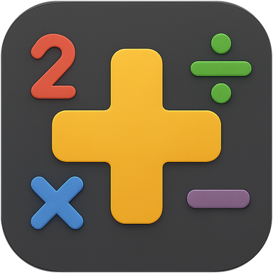

Mathematix
Pratique ludique des maths
Mathematix est une application mobile conçue pour rendre la pratique du calcul mental amusante et accessible à tous, des plus jeunes élèves aux adultes souhaitant entretenir leurs compétences.
Fonctionnalités principales
- Niveaux de difficulté adaptablesChoisissez un niveau scolaire (par exemple CP, CE1 jusqu'au collège) ou un niveau de difficulté général pour des défis sur mesure.
- Diversité des opérationsExercez-vous aux additions, soustractions, multiplications et divisions.
- Modes de jeu interactifsPlusieurs façons de jouer pour varier les défis.
- Interface simple et intuitiveUne prise en main facile et une concentration maximale sur les calculs.
- Suivi des progrès (prochainement)Visualisez vos améliorations et identifiez les domaines à renforcer.
L'objectif est de transformer l'apprentissage des mathématiques en une expérience positive et stimulante. Que vous soyez un parent cherchant à aider votre enfant, un étudiant préparant des examens, ou simplement quelqu'un qui aime les défis intellectuels, Mathematix est l'outil idéal pour aiguiser votre esprit.
Politique de confidentialité de Mathematix
Dernière mise à jour : 24/08/2025
VidemTech exploite l'application mobile Mathematix (ci-après dénommée le "Service"). Cette page vous informe de nos politiques concernant la collecte, l'utilisation et la divulgation des données personnelles lorsque vous utilisez notre Service et les choix qui s'offrent à vous concernant ces données.
Nous utilisons vos données pour fournir et améliorer le Service. En utilisant le Service, vous acceptez la collecte et l'utilisation d'informations conformément à cette politique. Sauf définition contraire dans la présente Politique de Confidentialité, les termes utilisés ont la même signification que dans nos Conditions Générales d'Utilisation.
1. Collecte et Utilisation des Informations
Nous collectons plusieurs types d'informations différentes à diverses fins pour fournir et améliorer notre Service.
Types de Données Collectées
-
Données d'Utilisation (Collectées automatiquement) :
Lorsque vous accédez au Service avec un appareil mobile, nous pouvons collecter certaines informations automatiquement, y compris, mais sans s'y limiter, le type d'appareil mobile que vous utilisez, l'identifiant unique de votre appareil mobile, l'adresse IP de votre appareil mobile, votre système d'exploitation mobile, le type de navigateur Internet mobile que vous utilisez, des identifiants uniques d'appareils et d'autres données de diagnostic ("Données d'Utilisation"). Le service est néanmoins 100% hors-ligne et aucune de vos données récoltées n'est partagées. -
Données Personnelles :
Nous ne collectons aucune information personnelle identifiable (telle que nom, adresse e-mail, numéro de téléphone) par le biais de l'application Mathematix. -
Données relatives au niveau scolaire / progression (Si applicable) :
Pour personnaliser votre expérience, l'application peut enregistrer localement sur votre appareil le niveau scolaire que vous avez sélectionné ou votre progression dans les différents niveaux de difficulté. Ces informations ne sont pas transmises à nos serveurs.
2. Utilisation des Données
VidemTech utilise les données collectées pour diverses finalités :
- Pour fournir et maintenir notre Service ;
- Pour vous informer des modifications apportées à notre Service (si vous avez un système de notification ou de compte) ;
- Pour permettre votre participation aux fonctionnalités interactives de notre Service lorsque vous choisissez de le faire (si applicable) ;
- Pour fournir une assistance client (si applicable) ;
- Pour recueillir des analyses ou des informations précieuses afin d'améliorer notre Service ;
- Pour surveiller l'utilisation de notre Service ;
- Pour détecter, prévenir et résoudre les problèmes techniques.
3. Stockage des Données
Toutes les données relatives à votre progression dans l'application Mathematix, telles que votre niveau sélectionné ou vos scores, sont stockées uniquement localement sur votre appareil. Ces données ne sont pas transmises ni stockées sur nos serveurs.
4. Transfert des Données
Vos informations, y compris les données de progression stockées localement, ne sont pas transférées en dehors de votre appareil.
5. Divulgation des Données
Exigences Légales
VidemTech peut divulguer vos Données Personnelles si elle estime de bonne foi qu'une telle action est nécessaire pour :
- Se conformer à une obligation légale
- Protéger et défendre les droits ou la propriété de VidemTech
- Prévenir ou enquêter sur d'éventuels actes répréhensibles en relation avec le Service
- Protéger la sécurité personnelle des utilisateurs du Service ou du public
- Se protéger contre la responsabilité légale
6. Sécurité des Données
La sécurité de vos données est importante pour nous, mais n'oubliez pas qu'aucune méthode de stockage électronique n'est sûre à 100 %. Bien que nous nous efforcions d'utiliser des moyens commercialement acceptables pour protéger vos Données Personnelles [ou "les informations stockées localement"], nous ne pouvons garantir leur sécurité absolue.
7. Fournisseurs de Services (Si applicable)
Nous n'utilisons actuellement aucun fournisseur de services tiers qui collecte des données personnelles par le biais de notre application.
8. Vie Privée des Enfants
Nous ne collectons pas sciemment d'informations personnelles identifiables auprès d'enfants de moins de 13 ans. Si vous êtes un parent ou un tuteur et que vous savez que votre Enfant nous a fourni des Données Personnelles, veuillez nous contacter. Si nous apprenons que nous avons collecté des Données Personnelles d'enfants sans vérification du consentement parental, nous prenons des mesures pour supprimer ces informations de l'appareil si nécessaire
9. Modifications de cette Politique de Confidentialité
Nous pouvons mettre à jour notre Politique de Confidentialité de temps à autre. Nous vous informerons de tout changement en publiant la nouvelle Politique de Confidentialité sur cette page.
Nous vous conseillons de consulter régulièrement cette Politique de Confidentialité pour prendre connaissance de toute modification. Les modifications apportées à cette Politique de Confidentialité entrent en vigueur dès leur publication sur cette page.
La date de "Dernière mise à jour" en haut de cette Politique de Confidentialité sera actualisée.
10. Nous Contacter
Si vous avez des questions concernant cette Politique de Confidentialité, veuillez nous contacter :
- Par email : contact@videm.tech
- En visitant cette page sur notre site web : videm.tech/#contact